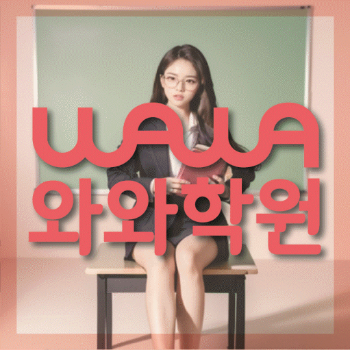

국어 수업 가능 학년
초1 · 초2 · 초3 · 초4 · 초5 · 초6 · 중1 · 중2 · 중3 · 고1 · 고2
SMALL CLASS LOCAL GUIDE
호매실 소수정예학원을 비교한다면 중학교 3학년 사회 학생의 진단, 개별 질문, 과제·오답 관리와 센터 위치를 먼저 확인해 보세요.
30초 핵심 안내
호매실 소수정예학원 검색자에게 필요한 첫 답은 학생 수, 거리, 비용 중 하나만 보는 대신 학습 진단과 통학 지속 가능성을 함께 비교해야 한다는 것입니다. 경기 수원시 호매실에서 중학교 3학년 사회에서 정리 노트는 깔끔하지만 문제 풀이와 연결되는 사용 빈도가 낮은 모습을 보이고, 주말에 누적 복습을 해야 하는 시점에 시험 범위를 확인한 뒤에도 우선순위를 정하지 않는 경향이 두드러지는 학생을 지도할 곳을 찾는다면 중학교 3학년 사회의 약점, 학교 일정, 질문 방식, 과제 기록, 학습실천력 조건을 구체적으로 확인해야 합니다. 아래에서는 호매실 가정이 실제 상담 메모로 활용할 수 있도록 항목별 기준을 설명합니다.
호매실은 수업 가능 생활권 기준입니다. 실제 방문 센터는 와와학습코칭센터 서수원점이며, 주소와 등록 정보는 아래 센터 기준 정보에서 확인할 수 있습니다.
초1 · 초2 · 초3 · 초4 · 초5 · 초6 · 중1 · 중2 · 중3 · 고1 · 고2
초1 · 초2 · 초3 · 초4 · 초5 · 초6 · 중1 · 중2 · 중3 · 고1
초1 · 초2 · 초3 · 초4 · 초5 · 초6 · 중1 · 중2 · 중3 · 고1 · 고2



센터 기준 정보
센터명·주소·등록 정보와 교습비 확인 경로를 상담 전에 살펴볼 수 있도록 정리했습니다.
경기 수원시 호매실 상담 기준
경기 수원시 권선구 호매실로104번길 90 JD타워 205호
수원교육지원청 등록 제6949호
실제 수업 가능 시간은 학년·과목별 일정에 따라 상담에서 확인합니다.
동네명은 수업 가능 지역을 찾기 위한 안내 기준입니다.
능실초 · 금호초
오현초호매실중 · 능실중 · 영신중 · 고색중
호매실고 · 영신여고 · 고색고 · 율천고 · 동우여고
센터명·주소·등록번호·가능 학년·학교 참고 정보는 제공된 센터 자료를 기준으로 정리했으며, 실제 수업 범위와 일정은 상담에서 다시 확인합니다.
지역별 학습 안내
학생의 과목별 학습 상황과 상담 전에 확인할 기준을 여섯 가지 주제로 나누어 정리했습니다.
경기 수원시 호매실 소수정예 과정을 찾는 가정의 예시로 중학교 3학년 사회에서 정리 노트는 깔끔하지만 문제 풀이와 연결되는 사용 빈도가 낮은 모습을 보이고, 주말에 누적 복습을 해야 하는 시점에 시험 범위를 확인한 뒤에도 우선순위를 정하지 않는 경향이 두드러지는 학생을 설정했습니다. 호매실에서 중학교 3학년 사회 공부가 막힐 때 정리 노트는 깔끔하지만 문제 풀이와 연결되는 사용 빈도가 낮은 모습만 보고 난도를 낮추거나 문제 수를 늘리면 원인이 가려질 수 있습니다. 주말에 누적 복습을 해야 하는 시점에 시험 범위를 확인한 뒤에도 우선순위를 정하지 않는 경향이 반복된다면 수업 전 준비, 수업 중 질문, 수업 후 재확인의 세 구간을 각각 짧게 설계해야 합니다. 경기 수원시 호매실 학부모가 비교할 소수정예 과정이 학생 유형에 맞는지는 같은 설명을 여러 번 듣게 하는지가 아니라, 설명 후 독립 풀이에서 무엇이 달라지는지를 확인하는 방식으로 판단할 수 있습니다.
호매실 소수정예학원의 주간 점검표에는 중학교 3학년 사회 목표, 실제 학습 시간, 완료 과제, 반복 오답, 질문 메모, 다음 주 수정 항목이 들어가야 합니다. 호매실에서 중학교 3학년 사회에서 개념어 사이의 관계 설명이 약한 학생을 돕는다면 빈칸이 생겼을 때 혼내기보다 계획이 과했는지, 시작 장벽이 있었는지, 자료가 부족했는지를 구분해야 합니다. 경기 수원시 호매실에서 검토할 소수 인원 학습관리를 알아보는 보호자에게는 모든 세부를 실시간으로 보내기보다 중요한 변화와 집에서 도울 한 가지 행동을 정리하는 편이 학생의 자율성을 지키기 좋습니다. 학습실천력을 포함한 경기 수원시 호매실의 여러 조건을 비교하더라도 호매실 소수정예학원이 이 기록을 실제 수업 수정에 쓰는지가 핵심입니다.
경기 수원시 호매실 생활권의 소수정예 수업 상담에서 확인할 진단은 한 번의 레벨테스트 점수보다 개념 이해, 적용, 시간, 설명 가능 여부를 분리해 보는 과정이어야 합니다. 경기 수원시 호매실에서 최근 사용한 사회 교재, 최근 시험지, 오답 노트, 일주일 계획표를 가져가면 중학교 3학년 사회에서 개념어 사이의 관계 설명이 약한 학생의 문제가 지식 부족인지 실행 부족인지 구분하기 쉽습니다. 경기 수원시 호매실 학부모가 비교할 소수정예 과정 진단에서는 핵심 개념의 관계를 구조화하는 단계, 지도·도표·사료를 읽는 단계, 원인과 결과를 구분하는 단계, 서술형 근거를 정리하는 단계를 차례로 확인하고, 힌트를 받은 뒤 같은 유형을 혼자 다시 풀 수 있는지도 기록해야 합니다. 학습실천력을 함께 문의하더라도 진단 결과가 어떤 반 편성과 과제량으로 이어지는지 설명을 듣지 못하면 단순 점수표에 그칠 수 있습니다.
경기 수원시 호매실 소수 인원 수업 자료에 기재된 수업 학교는 능실초, 금호초, 오현초, 호매실중, 능실중, 영신중, 고색중, 호매실고, 영신여고, 고색고, 율천고, 동우여고입니다. 경기 수원시 호매실 안에서도 학교와 학년이 같아도 교과서, 진도 시점, 평가 방식, 학습 범위가 달라질 수 있으므로 학교명보다 학생의 실제 교재와 평가 범위를 기준으로 판단해야 합니다. 호매실 학부모는 중학교 3학년 사회의 최근 평가 자료를 보여 주고 공통 진도와 학교별 대비 기간을 어떻게 나누는지 질문하는 것이 좋습니다. 호매실 소수정예학원이 특정 결과를 보장한다고 보기보다 중학교 3학년 사회에서 개념어 사이의 관계 설명이 약한 학생의 오답 원인과 학교 일정이 주간 계획에 실제로 연결되는지를 판단해야 합니다.
등록 전 확인할 호매실 소수정예학원의 주소 정보는 경기 수원시 권선구 호매실로104번길 90 JD타워 205호입니다. 경기 수원시 호매실 생활권의 소수정예 수업을 고려하는 학생이 주중에 꾸준히 다닐 수 있는지는 편도 이동 시간뿐 아니라 하교 지연, 다른 과목 일정, 수업 종료 뒤 귀가 대기까지 포함해 판단해야 합니다. 경기 수원시 호매실 상담에서는 건물 출입 시간, 보호자 픽업 지점, 주차나 차량 지원의 실제 운영 여부를 질문하고 제공되지 않은 정보를 임의로 가정하지 않아야 합니다. 학습실천력의 핵심은 학생에게 더 많은 체크 표시를 요구하는 것이 아니라 작은 약속을 지키고 실패 원인을 수정하는 경험을 쌓게 하는 데 있습니다. 경기 수원시 호매실 소수정예 과정에서는 중학교 3학년 사회에서 개념어 사이의 관계 설명이 약한 학생의 기록을 호매실 가정에 전달할 때 사실, 해석, 다음 행동을 구분하는지 살펴봐야 합니다.
경기 수원시 호매실에서 검토할 소수 인원 학습관리의 수준 조정은 반을 나누는 데서 끝나지 않고 같은 반 안에서도 설명량과 과제 난도를 조정할 수 있어야 합니다. 호매실의 중학교 3학년 사회에서 개념어 사이의 관계 설명이 약한 학생은 쉬운 문제만 반복해도, 지나치게 어려운 문제만 받아도 성장 단계를 확인하기 어렵습니다. 경기 수원시 호매실 생활권의 소수정예 수업 상담에서는 공통 교재 외 보완 자료의 선택 기준, 진도 변경 가능 시점, 질문이 많은 날의 운영 방식을 구체적으로 확인해야 합니다. 경기 수원시 호매실 학부모가 학습실천력을 함께 묻는 경우에도 해당 조건이 실제 수업 집중도와 피드백 시간을 줄이지 않는지 살펴봐야 합니다.
FAQ
경기 수원시 호매실의 학교명이 참고 자료에 있어도 실제 학교별 대비가 확정되는 것은 아닙니다. 경기 수원시 호매실 학생의 실제 학년과 과목을 밝히고, 교과서, 최신 시험 범위, 수업 프린트, 수행평가 안내 및 학생 답안을 제시한 뒤 공통 진도와 학교 대비 기간을 어떻게 나누는지 확인해야 합니다.
경기 수원시 호매실 학부모는 누가 무엇을 언제 점검하고 어떤 행동 과제로 돌려주는지, 기록이 다음 계획에 쓰이는지 봐야 합니다. 조건이 바뀌는 시점과 학생에게 미치는 영향을 기록해 두면 경기 수원시 호매실 소수정예 과정 비교가 쉬워집니다.
경기 수원시 호매실 학생별 확인 수업 진단에서 중학교 3학년 사회의 개념, 적용, 시간, 설명 가능 여부가 구분되어 있는지 보세요. 호매실 가정이 다음 점검일에 같은 기준으로 변화를 비교할 수 있어야 진단이 계획으로 이어집니다.
경기 수원시 호매실 소수 인원 수업에서는 과제량만으로 관리 수준을 판단하기 어렵습니다. 경기 수원시 호매실 소수 인원 수업에서 중학교 3학년 사회에서 개념어 사이의 관계 설명이 약한 학생의 실제 가능 시간에 맞춰 분량을 조정하고, 미완료 원인과 오답 재풀이까지 확인하는지가 더 중요합니다.
상담 상황 예시
아래 내용은 홍보용 성공 사례가 아니라, 호매실에서 학원을 알아볼 때 적용할 수 있는 상담 예시입니다.
호매실에서 소수정예학원을 찾으며 아이가 중학교 3학년 사회에서 정리 노트는 깔끔하지만 문제 풀이와 연결되는 사용 빈도가 낮은 상황을 숨기지 않고 말할 수 있는지가 중요했습니다. 상담 전 답안과 오답 노트를 준비하고 반 정원, 질문 순서, 재풀이 방식, 학습실천력 조건을 하나씩 확인했습니다. 경기 수원시 호매실 생활 동선 안에서 지킬 수 있는 계획인지까지 살펴보니 광고 문구보다 우리 가정의 선택 기준이 분명해졌습니다.